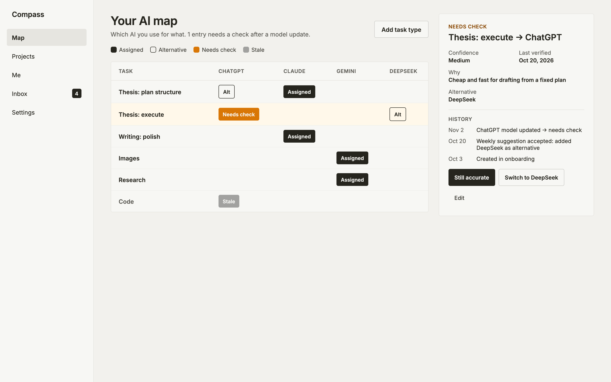
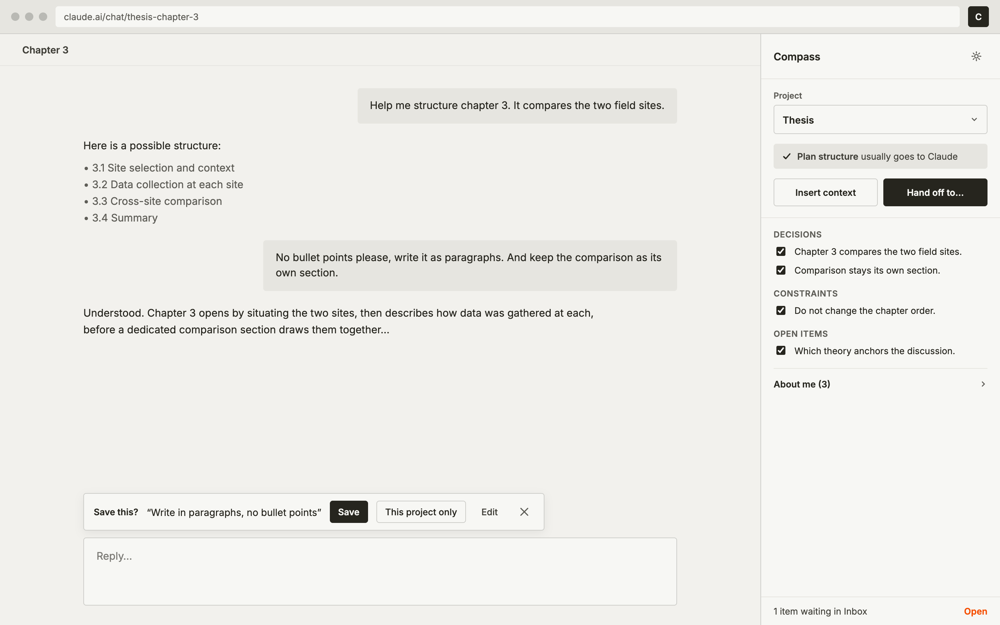
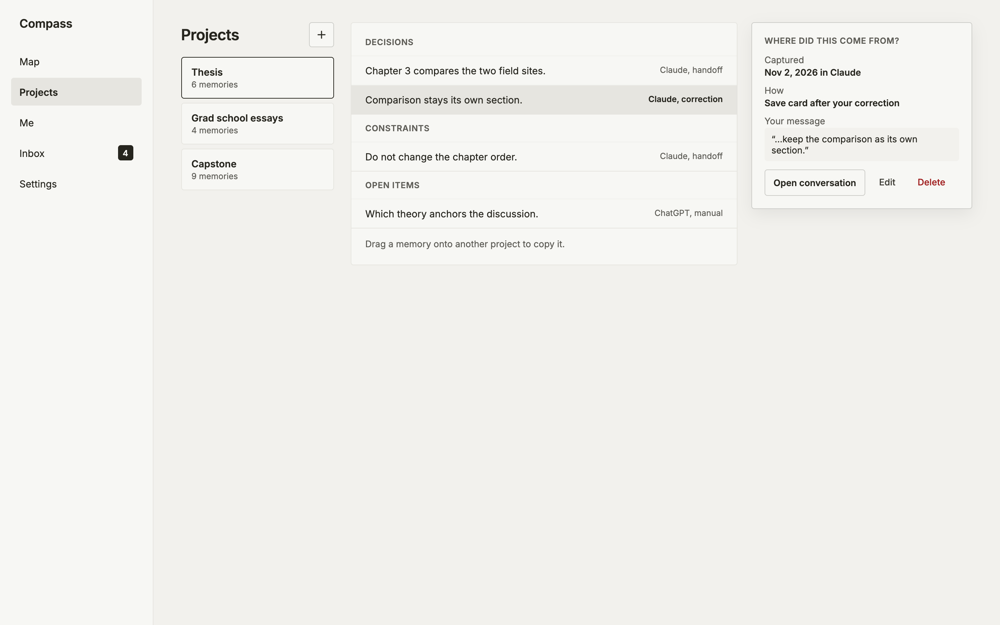
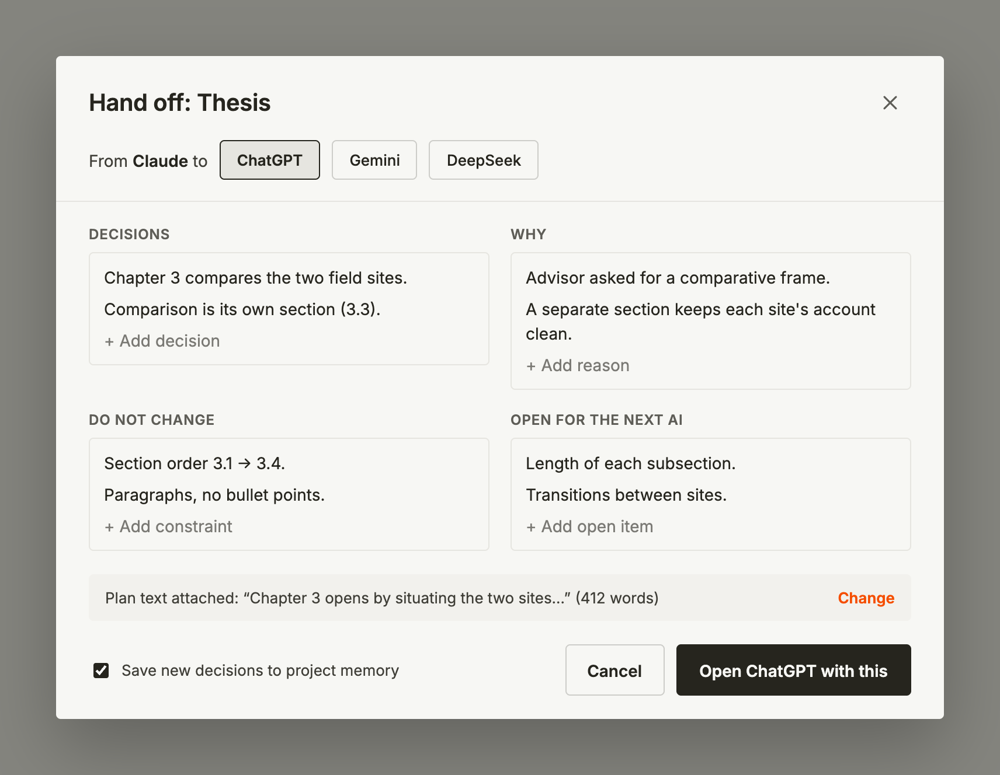
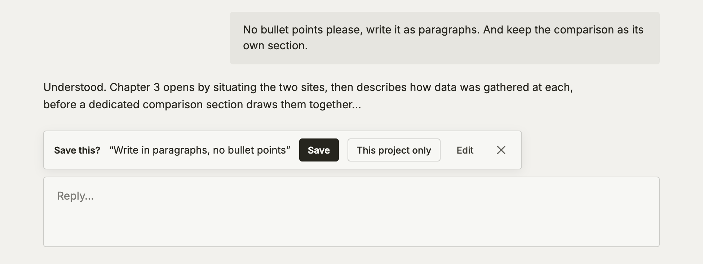
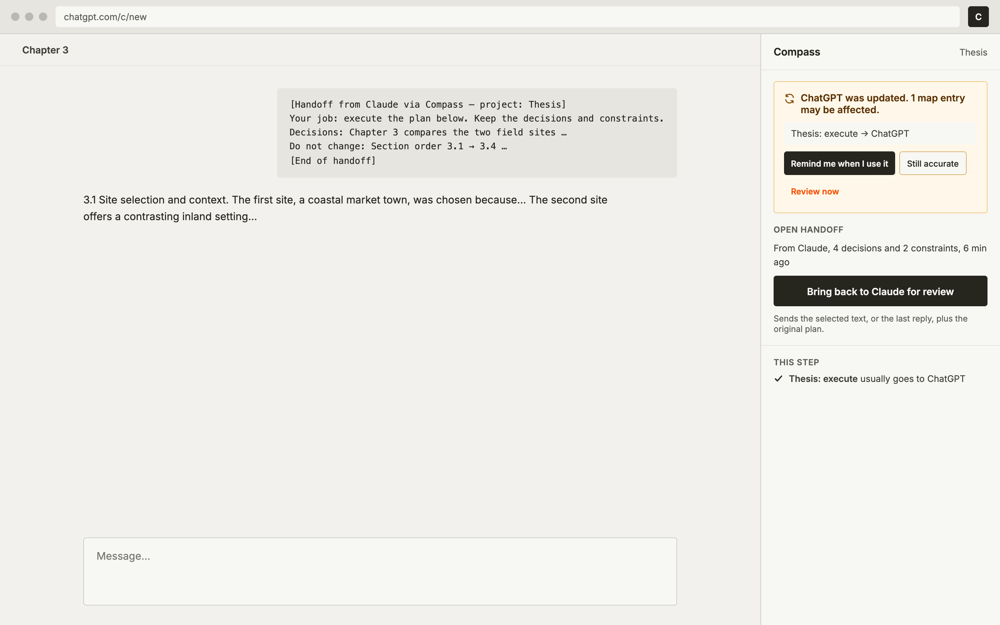
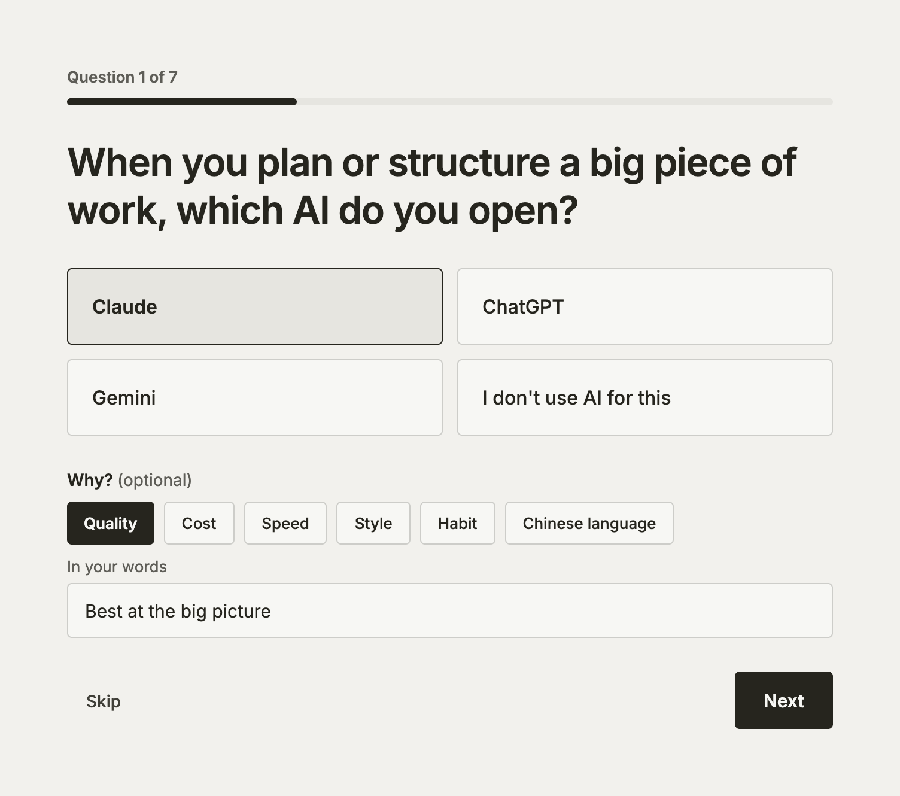

A map of who does what.
Answer seven quick questions and Compass draws your map. Every entry keeps why you chose that AI and when you last checked it, so the map stays honest.
Draw your map →
Compass is for people who work with more than one AI. It keeps a map of which AI does which job, keeps each project’s decisions in one place, and carries them from one AI to the next, so you never brief from scratch.

The plan was made in one AI. The next one never hears why, so it drifts.
“No bullet points.” “Keep it short.” Said in ChatGPT, then said again in Claude.
The AI that was best for a job last month may not be today, and nobody tells you.
Answer seven quick questions and Compass draws your map. Every entry keeps why you chose that AI and when you last checked it, so the map stays honest.
Draw your map →
Decisions, the reasons behind them, and what must not change, kept per project. Copy them into any AI as a ready-made brief, and see where each one came from.

Compass packs the decisions, reasons and limits, then opens the next AI with everything filled in. When the work is done, bring the result back to check it against the plan.

Chrome extension
When you tell an AI “no bullet points”, Compass offers to remember it. From then on every AI hears it, without you asking again.

Chrome extension
When an AI is updated, or you suddenly correct it far more than usual, Compass points to the jobs on your map that depend on it, so you can check them.

Your map, projects and preferences live in this browser. There is no account and no server copy.
Export everything as one file, or delete it all, from Settings.
If you join the study, research logs record events and numbers, never your conversations.
Seven questions, under five minutes. Compass is a research prototype: we are studying how people who use two or more AI assistants split their work between them.
